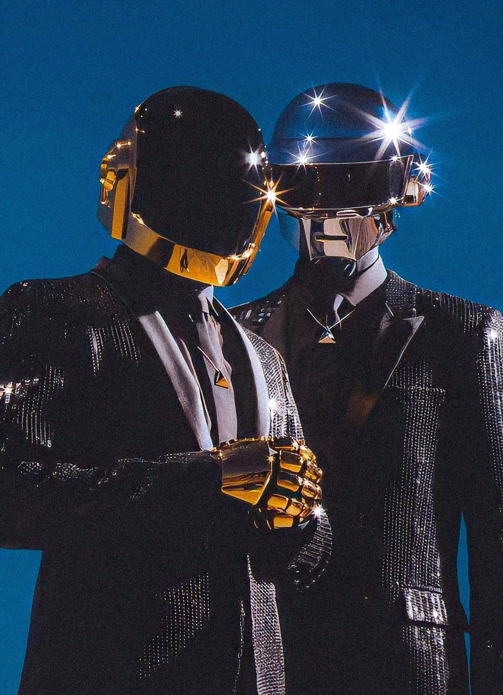
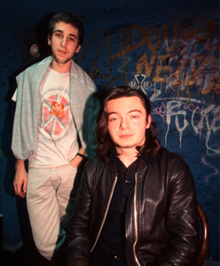

Daft Punk fue un dúo formado por los músicos franceses Guy-Manuel de Homem-Christo (n. 1974) y Thomas Bangalter (n. 1975). Daft Punk alcanzó una gran popularidad en el estilo house a mediados de la década de los años 90 en Francia y continuó con su éxito los años siguientes.
Daft Punk es reconocido por sus elaborados conciertos en los que incorporan efectos visuales, por el énfasis que ponen en la historia y los componentes visuales de sus producciones musicales. También porque desde 2001 en sus actuaciones o apariciones públicas aparecen disfrazados de robot. En muy raras ocasiones conceden entrevistas o aparecen en televisión. El dúo ha vendido más de 12 millones de álbumes,8 y más de 17 millones de sencillos. El 22 de febrero de 2021, Daft Punk anunció su separación por medio de un video subido en sus redes sociales titulado epilogue
No elegimos ser robots. Hubo un accidente en nuestro estudio. Estábamos trabajando con el sampler [en la toma de muestras], cuando exactamente a las 9:09 del 9 de septiembre de 1999, explotó. Cuando recuperamos la consciencia, descubrimos que nos habíamos convertido en robots
Los integrantes de la banda usan trajes de robots
Guy-Manuel de Homem-Christo y Thomas Bangalter
El acrónimo "Daft", presente en su primer DVD, proviene de las iniciales de "A Story about Dogs, Androids, Firemen and Tomatoes". Estas palabras reciben significado al dúo musical por su primera canción «Da Funk» del año 1995 perteneciente al álbum Homework, dónde aparece un perro antropomorfo como protagonista en el vídeo. Luego "Androids" por la aparición de robots bailando en el vídeo «Around the World» del año 1997 del álbum Homework. "Fireman" (Bombero en español) que aparecen en el video de «Burnin'» y "Tomatoes" por el vídeo «Revolution 909»
| Año | Trabajo nominado | Categoría | Premio |
|---|---|---|---|
| 2009 | Alive 2007 | Mejor Álbum de Dance/Electrónica | Premio Grammy |
| 2014 | Random Access Memories | Álbum del Año | Premio Grammy |
| 2014 | Get Lucky | Mejor Grabación del Año | Premio Grammy |
| 2014 | Daft Punk | Mejor Artista Electrónico | Premios Billboard Music Awards |